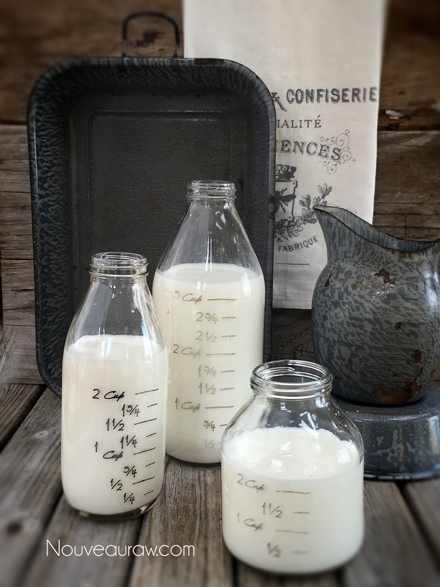

Coconut Milk / Cream – using shredded coconut

~ raw, vegan, gluten-free, Paleo ~
Coconut milk is a wonderful alternative to dairy and nut milk. I am starting to notice that more and more people seem to be facing nut allergies. It is my humble theory that we tend to go from one extreme to another when it comes to taking in different foods.
I have several friends who found out that they were allergic to dairy milk (cheese, yogurt, milk), so they switched everything over to almonds… almond milk, almond yogurt, almond-based cheese, and even took on almond flour. After some time passed, they started to develop intolerance to almonds.
You see where I am going with this. So, I am going to lovingly share with you that we all need to learn to add variety into our diets and make sure that we are rotating the foods we take in. (me included, I am just as guilty.)
When it comes to coconut milk, there are many different ways that it can be made. You can use Young Thai coconut (my favorite), dried coconut flakes, and mature brown hairy coconuts.
Today, I will share with you have to make it from dried shredded coconut. To learn how to make from the young Thai coconuts, click (here). This version is more stable and creamy…but it’s good to have many tricks up our sleeve when it comes to making our own foods.
I have gone into great detail on how to make many different thicknesses, how to strain it, how to flavor it, and how to care for your nut bag. All of these steps are important and will help you be successful in the kitchen. There is a lot of information from everything that I have learned over the years. I hope you find it helpful. :)
Light coconut milk:
- 4 cups of water
- 1 cup shredded dried coconut
Regular coconut milk:
- 4 cups water
- 2 cups shredded desiccated coconut
Thick coconut milk:
- 4 cups water
- 3 cups shredded dried coconut
Coconut cream:
- 4 cups water
- 4 cups shredded dried coconut
Preparation:
Blending process:
- Place the shredded coconut in a high-powered blender along with the water.
- Start the blender on low and work up to high, then blend for 1-2 minutes or until the nuts have been pulverized.
- A high-powered blender will accomplish the job much easier.
- If you don’t own one such as a Vitamix or Blendtec, you might have to blend for 3-5 minutes.
- Do not sweeten or add flavorings until you have strained the milk from the pulp.
Straining the milk:
- Turn the bag inside out and keep seams on the outside for easier straining, cleaning, and faster drying.
- Place the nut milk bag in the center of a large bowl.
- Instead of a nut bag, you can drape cheesecloth over the edges of the bowl and pour the milk through it. I find this process messier, and it doesn’t seem to filter it as well.
- Desperate? Don’t have a nut bag or cheesecloth while you are vacationing in France? Take off one of those silky-French knee-high nylons, wash it, and pour the milk through it. I am here, always thinking for you. :)
- With one hand holding the nut bag, pour the liquid into the bag. Lift the bag, and the milk will start to flow through the mesh holes in the bag. The finer the mesh, the more filtered the milk will be.
- Gather the nut bag (or cheesecloth) around the coconut pulp and twist close.
- Squeeze the coconut pulp with your hand to extract as much milk as possible.
- Do not toss the pulp. Freeze and dehydrate it, which can be used in other recipes such as smoothies, crusts, cookies, crackers, cakes, or raw breads.
Flavoring:
- I recommend flavoring your milk after the pulp has been removed. That way, the pulp remains neutral in flavor for other recipes.
- Liquid sweeteners: you can sweeten nuts milks with the sweetener of your choice. Start with 1 tsp and build up. For a sugar-free option, use liquid stevia. (I like NuNaturals )
- Dried fruit: Medjool dates add a wonderful caramel-like flavor to nut milks. You might want to run it back through to the nut bag to filter any small bits out. You can use all sorts of fresh or dried fruits for this.
- Spices: To liven things us, add cinnamon, cloves, cardamom, pumpkin spice, you name it.
- Extracts: vanilla or any other flavoring.
- Raw cacao powder
Thickeners and Emulsifiers:
- Lecithin – thickener and emulsifier
- Add up to 1 Tbsp per every 2-3 cups of water used.
- I highly recommend sunflower over soy lecithin.
- Coconut butter/manna
- Add up to 1 Tbsp per every 2-3 cups of water used.
- Do not use coconut oil. It hardens when chilled and may create small gritty pieces in the milk
- Nut butters:
- Add up to 1 Tbsp per every 2-3 cups of water used
- If using store-bought, watch for added ingredients such as salt.
Storing and expiration:
- Store the milk in an airtight glass container such as a mason jar.
- Always label the contents and the date that it was made.
- If, for some reason, separation still does occur, shake the jar before serving, and the milk will come back together.
- Fridge – The milk can last anywhere from 3-5 days in the refrigerator.
- If the nut milk prematurely sours, it may be from an unclean blender, nut milk bag, or poor quality nuts.
- Freezer – There are several ways to store coconut milks in the freezer. Freeze for up to 3 months.
- Pour the milk into ice cubes trays and freeze. Use at a later day for plopping into smoothies.
- Freeze in 1 1/2 pint freezer-safe jars.
- It is essential that you only freeze glass jars that are made for freezing. I have tested this, and sure enough, I have had jars crack on me, resulting in throwing everything in the trash — sad day.
- You can use smaller jars for better portion control if you don’t plan on using a full 1 1/2 pints worth.
- Pay attention to the “maximum freeze line” indicated on the jar. If you don’t see that, then it’s another indicator that the jar isn’t safe to place in the freezer.
Nut bag maintenance:
- It is crucial to keep the nut milk bag clean!
- Wash with organic, scent-free soap, such as Dr. Bronners. Do not use laundry soap. (always refer to the manufactures cleaning method as well)
- Rinse well air dry. Ideally, in the direct sun to receive free sterilizing from the warm rays. Nylon nut milk bags should not be placed in the sun as the ultraviolet rays can damage the nylon.
- Do not hang the bags outside on the clothesline to dry. We don’t want an air-raid of bird poop on our bag.
- Proper bag storage –
- I like to roll mine up and store in a glass jar. This will help keep it clean, protect it from dust, and accidental hole damage. A holy bag has no purpose when it comes to nut milk making.
- Also, if you use nut bags for multiple reasons, it would be a good idea to store them in separate jars, labeling them for their purpose, such as; nut milks, juicing, sprouting.